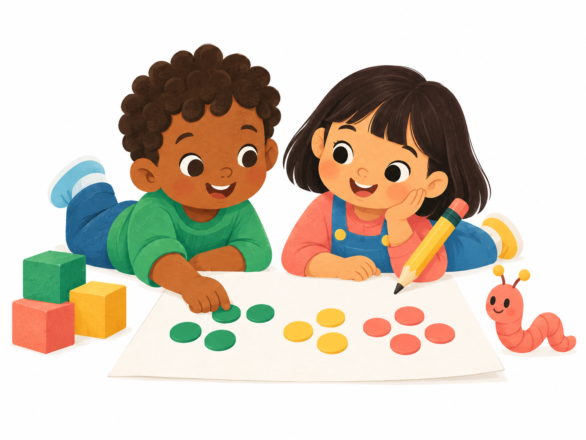

For families
Less guesswork. More shared discoveries. Find paper-based practice shaped around your child’s skills, at your own pace.
LITTLE HANDS. BIG POSSIBILITIES.
A little ink. A little curiosity. A world to discover.
Playful math activities that grow with your child, with AI quietly guiding what comes next.
Math for ages 2–6 · Free during early access

Small steps. Big discoveries.PAPER FIRST. WONDER ALWAYS.
Count, draw, and discover with printable math activities. There’s room to scribble, try again, and make a little mess along the way.
Children learn on paper. Our AI works behind the scenes to help make each next step a little more personal.
MEET ANGI, THEIR LEARNING COMPANION
Some skills click right away. Others need another go. ANGI connects the dots to build an evolving picture of your child’s learning.
With your feedback, our AI helps choose what to explore next—and when to revisit a foundation.
A LITTLE INSIGHT FROM YOU. A WORLD OF POSSIBILITY FOR THEM.
Here’s how it will work when the course opens.
Answer a short yes-or-no questionnaire about what your child can do. That gives ANGI a starting point.
Print their math activities and explore together. Then share a few quick answers about how it went.
Each update helps ANGI refine their profile, shaping the next activities around their growing skills.
MORE WAYS TO GROW
Less guesswork. More shared discoveries. Find paper-based practice shaped around your child’s skills, at your own pace.
Help bring more personal, paper-first learning to more children through a free early research partnership.
EDUCATORS. BUILDERS. PARENTS.
We bring together mathematics education, AI, and design.
And we’re parents of little learners, just like you.
A mathematics educator and software developer pursuing a PhD in Mathematics Education at Simon Fraser University.
A doctoral researcher in AI, with 10+ years of AI experience, leading software development in an AI product team at Amazon.
A designer and parent bringing nine years of experience across graphic design and marketing to a welcoming learning experience.
GOOD QUESTIONS.
Our first math course is designed for children ages 2–6, with parents or caregivers helping them explore the activities and share feedback.
The activities are designed for paper. Grown-ups use the website to print activities and share how they went, while children count, draw, and discover off-screen.
Our first course will be free during early access. Pricing after early access hasn’t been decided yet.
ANGI uses your answers and activity feedback to update your child’s learning profile. Our AI uses that profile to guide upcoming lessons, practice, and review. You decide when to practice.
THEIR NEXT CHAPTER STARTS HERE.
Be there for the beginning of a more personal way to learn.
Math for ages 2–6 · Free during early access